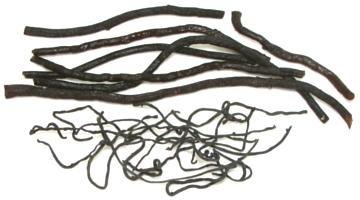

This coastal seaweed is a siphonous alga, meaning its round branches are composed of a tangle of near microscopic filaments, each filament being a single multinucleate cell. This accounts for its spongy texture. Its branching fronds grow up to about 12 inches long.
Sponge seaweed is very common as a temperate Pacific species from around Japan, but is also found along the Pacific coasts of Canada, California and northern Mexico. Two subspecies were thought to be invasives around Ireland and Britain, but genetics have shown them to be a separate population. It is possibly an invasive in other parts of the North Atlantic, especially along the Atlantic coast of North America and is a serious problem in Massachusetts. One subspecies grows around Australia, New Zealand, South America, the Falkland Islands, the southern tip of Africa and possibly as far south as Antarctica. Subspecies also exist in small regions of the Mediterranean.
This seaweed can be a problem in shellfish beds, because it can grow profusely on the shells, hindering movement and feeding, and sometimes breaks them lose and floats them away, thus the name "Oyster Thief". Photo by Flyingdream contributed to the Public Domain .
More on Algae and Cyanobacteria.
Sponge Seaweed is used in various skin rejuvenation products, but in Asia, particularly Korea, it is used for food, particularly as a flavor and aroma modifying ingredient. It has a distinctive aroma compared to other seaweeds.
 This seaweed is valued in Korea mainly for inclusion in a number of kimchees, especially watery kimchees or those with a fish component. It is reputed to eliminate fishy smells, the smell of garlic, and aftertastes. The strands are typically 0.040 inch diameter dried and 0.120 after soaking.